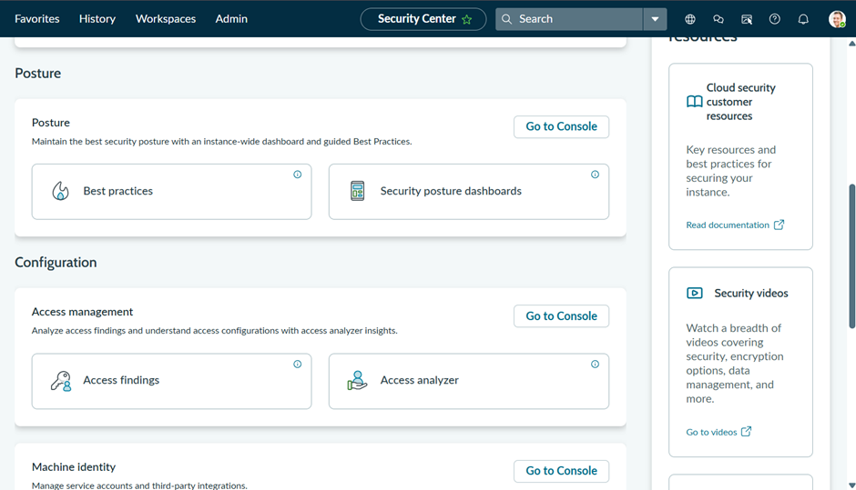
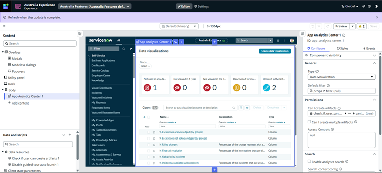
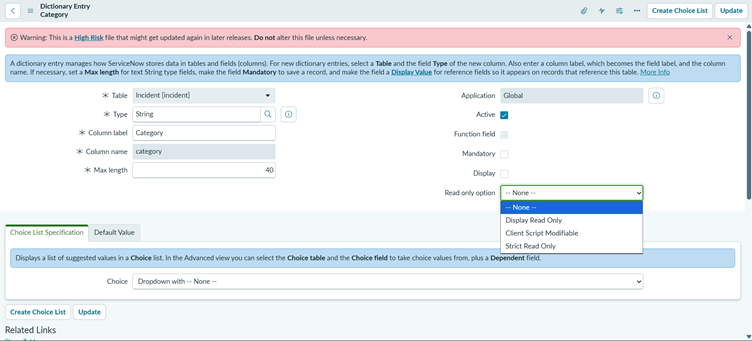
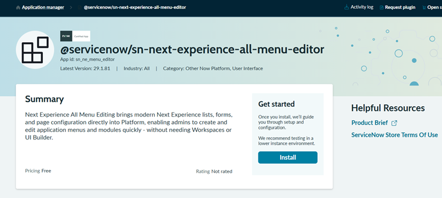
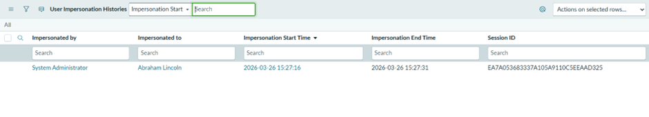

ServiceNow’s Zurich release gave us better tools to build and debug, whereas the Australia release feels more grounded.
It focuses less on new capabilities and more on improving how admins control, secure, and manage the platform at scale. And the difference shows up in the details, especially in areas like access control, UI experience, and visibility.
1. Security Center Enhancements
Managing platform security just got smarter in the Australia release. Security Center now provides admins with granular control, contextual hardening recommendations, and integrated IAM tools, making it easier to govern security across your instance without juggling multiple tools or full admin privileges.
Key Capabilities
- Accept Risk for Hardening Settings: Accept or exempt security hardening recommendations that don’t apply to your organization. Mandatory justification and projected security score impact ensure decisions are transparent and auditable.
- Granular Admin Role: Developers and admins can now configure Security Center without full platform admin privileges, improving security while allowing flexibility.
- Access Management Console: Provides enhanced visibility into Access Analyzer findings and enables admins to track, prioritize, and remediate access issues with task assignments.
- Enhanced IAM Integration: IAM tools are now embedded directly in the Security Center, simplifying workflows and giving admins a single-pane view of critical access controls.
- Version-Based Hardening Settings: Only relevant hardening settings for your instance version are shown, eliminating noise and improving clarity.

Why It Matters
- Governance at scale: Admins can manage risks proactively rather than reactively.
- Role-based security: Granular roles reduce unnecessary full admin exposure.
- Streamlined remediation: Admins can track and fix access issues efficiently.
- Simplified IAM management: Critical IAM tools are in one place.
- Contextual guidance: Version-based recommendations avoid irrelevant suggestions.
How Is This Different from Zurich?
It goes from basic visibility and one-size-fits-all recommendations to contextual, governance-focused security management for admins.
Real Admin Use Case
Recently, we had a requirement to manage and monitor security-related configurations on the platform. However, the customer was not comfortable granting full admin access, which is a very common scenario, especially in regulated environments.
This is exactly where the granular admin role for Security Center becomes extremely valuable.
Instead of relying on full platform admin privileges, we can now:
- Access Security Center configurations
- Monitor security posture
- Work on hardening settings
- Handle access-related insights
All without needing the admin role.
2. Notifications Enhancements
In the Australia release, ServiceNow gives admins more control over platform messaging, making notifications smarter, safer, and more reliable even when users are logged out. It’s less about sending notifications and more about ensuring critical information reaches the right people securely and reliably, while giving admins full visibility and governance.
Key Capabilities
- Integrate personal corporate mailboxes within ServiceNow to send and receive emails.
- Send outbound emails using Microsoft Graph.
- Encrypt inbound email attachments in CLE-enabled tables and decrypt them for outbound emails.
- Enhanced inbound email classification supporting thread-index headers for Microsoft / Outlook emails.
- Deliver critical push notifications even when users are logged out.
Plugin to be enabled: (com.glide.push.logged_out.users)
Why It Matters
- Enterprise-ready communication aligned with corporate systems.
- Secure handling of sensitive attachments.
- Reliable delivery of critical alerts.
- Better control over platform messaging.
Understanding Email Classification (What Changed in Australia)
While working with inbound emails, classification has always been based on things like subject prefixes, watermarks, and message IDs.
What Australia adds here is support for thread-index based classification, especially for Microsoft / Outlook emails.
This improves how replies are identified and mapped back to the correct records, reducing duplicate updates and misclassification.
How Admins Use It
- Scenario 1: Sending an urgent incident update while ensuring attachments remain secure
- Scenario 2: Delivering critical alerts to users who are not logged into the platform
- Scenario 3: Handling email replies more accurately without creating duplicate records
How Is This Different from Zurich?
It goes from basic, disconnected notifications, to secure, enterprise-grade, and reliable communication managed by admins.
3. Data Visualization Governance
This is one of those features that doesn’t immediately stand out, but becomes very relevant once you start managing dashboards at scale. Over time, dashboards and reports tend to grow organically, and without visibility, they quickly become cluttered or outdated.
The Australia release introduces usage insights and recommendations to help admins manage this better.
Key Capabilities
- View usage statistics in the Data Visualization Library, including number of reports and unused visualizations.
- Identify data visualizations that are not used in any dashboards.
- Identify visualizations not viewed for extended periods.
- Get recommendations to review, fix, or delete problematic analytics resources across dashboards, visualizations, and indicators.
Why It Matters
- Reduces clutter across dashboards.
- Improves performance.
- Saves manual effort in auditing analytics.
- Helps maintain a clean reporting layer.
How Admins Use It
- Scenario 1: Reviewing unused dashboards and cleaning them up.
- Scenario 2: Fixing outdated or unused visualizations.
- Scenario 3: Keeping only relevant analytics visible to users.
How Is This Different from Zurich?
It goes from manually identifying unused dashboards, to built-in visibility and recommendations for analytics governance.
4. AI Search and Now Assist
This is where you start noticing a shift in how admins interact with the platform. Instead of navigating multiple modules or relying heavily on documentation, the platform helps you reach the right place faster.
Australia strengthens AI Search and Now Assist in a way that directly impacts admin workflows.
Key Capabilities
- Improved AI Search experience replacing legacy search capabilities.
- Ability to search and access records, configurations, and interactions more efficiently.
- More accurate and intelligent search results.
- AI-assisted experience for faster navigation and task execution.
Why It Matters
- Faster navigation across modules.
- Reduced dependency on manual exploration.
- Improved troubleshooting efficiency.
- Better productivity for admins.
How Admins Use It
- Scenario 1: Searching for a configuration or record and navigating directly.
- Scenario 2: Using improved search results to troubleshoot issues faster.
- Scenario 3: Accessing relevant information without navigating multiple modules.
How Is This Different from Zurich?
It goes from navigating through modules and relying on experience, to faster, search-driven discovery with improved relevance.
5. UI Builder Enhancements
We often end up building dashboards or workspace pages, and this is where the Australia release simplifies things.
With new templates and better integration with visualizations, UI Builder becomes more practical and less effort-intensive.
Key Capabilities
- New UI Builder templates for dashboards.
- New templates for Data Visualization Library pages.
- Ability to create dashboard and data visualization pages directly within workspaces.
- Support for adding data snapshot indicators in data visualizations.

Why It Matters
- Faster setup of dashboards and workspace pages.
- Improved consistency across UI.
- Easier reuse of analytics components.
- Reduced effort in building UI from scratch.
How Admins Use It
- Scenario 1: Creating dashboards using templates instead of building manually.
- Scenario 2: Building visualization pages directly within workspaces.
- Scenario 3: Enhancing dashboards with snapshot-based indicators.
How Is This Different from Zurich?
It goes from building dashboards and pages from scratch, to faster, template-driven UI creation.
Bonus Enhancements
There are also a few smaller enhancements worth noting:
- Enhanced Read-Only Control (Dictionary Level): More granular read-only options like Display Read Only, Client Script Modifiable, and Strict Read Only give better control over field behaviour without relying on custom scripts.

- Next Experience All Menu Editor: Admins can now create and manage application menus directly from the platform using a simplified editor. Build modules using natural language prompts, reorder with drag-and-drop, and configure lists and records inline without switching tools.

- Impersonation Audit / Logging: Track impersonation activity more clearly by logging impersonations and, when audit tracking is enabled, recording both the impersonated user and the actual user who performed the action.

Final Thoughts
After working through these enhancements, the Australia release feels less about adding new things and more about improving how the platform actually works for admins.
It focuses on areas we deal with every day – security access, notifications, dashboards, search, and UI building and makes them more practical and manageable.
What stands out is how these changes translate into real work:
- You don’t need full admin access just to manage security anymore.
- Notifications are more reliable and aligned with enterprise needs.
- Dashboards are easier to review and clean up.
- Finding things on the platform is faster and less frustrating.
- Building UI is quicker and more structured.
Individually, these may seem like small improvements. But together, they remove a lot of the friction admins usually deal with.
Compared to Zurich, which focused more on expanding capabilities, Australia feels more refined. It is about control, clarity, and making day-to-day admin work smoother.
And that is where it really delivers value – it’s what I’m calling “The AAA” – The Admin Australia Advantage.